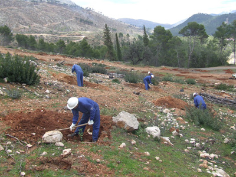

Sábado, 27 de Abril de 2013 12:23 Laura Fernández @LauraFS4
La Consejería de Agricultura, Pesca y Medio Ambiente ha iniciado las obras de mejora forestal en montes con problemas erosivos de la provincia de Jaén, que van generar cerca de 1.600 jornales, equivalentes a 40 puestos de trabajo por espacio de tres meses. Así lo ha puesto de manifiesto la delegada territorial de Agricultura y Medio Ambiente, Irene Sabalete,quien ha especificado que las actuaciones medioambientales de carácter forestal en la zona suroriental de Jaén, concretamente en los municipios de Huesa y Quesada, tienen un presupuesto total de 289.309 euros.

Estos trabajos consisten en la ejecución de clareos selectivos, eliminación de residuos, albarradas, mejora de caminos y control de plagas con el objetivo de mejorar las formaciones forestales y combatir la acción de la erosión. Así mismo, está previsto que a mediados de mayo, en coincidencia con el incremento del riesgo de incendios, los trabajos se suspendan y se retomen en la segunda quincena de octubre, ha especificado la delegada.
El Plan de Choque por el Empleo en Andalucía tiene como principal objetivo la generación del llamado 'empleo verde' en 71 municipios jienenses. En el caso de la provincia de Jaén, Sabalete ha recordado que del total de inversión prevista, que asciende a 10,3 millones de euros, se destinarán 4,1 millones a la mejora de caminos rurales y 6,2 millones de euros a actuaciones de mejora forestal y regeneración ambiental.
Todas estas iniciativas, que contarán con la cofinanciación del Fondo Europeo Agrícola de Desarrollo Rural (Feader), incluyen, entre otros, trabajos de regeneración de zonas incendiadas, labores preventivas contra el fuego, obras contra la erosión y acciones de conservación de la flora, la fauna, el paisaje y los acuíferos.
Para la realización de estos trabajos, las empresas adjudicatarias deben contratar a personas inscritas como demandantes en el Servicio Andaluz de Empleo (SAE). Las contrataciones dan prioridad a desempleados de larga duración con cargas familiares, que no reciben ningún tipo de prestación o subsidio y que no hayan tenido vinculación con la entidad empleadora en los tres meses anteriores a la presentación de la oferta.